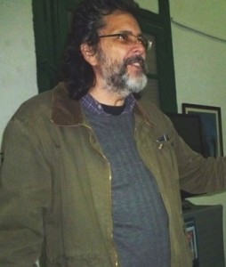

Geschätzt für sein Talent und seine Fähigkeiten, ocupa el cargo de director de la editorial Letras Cubanas. Abel Prieto consigue rápidamente la unanimidad entre los intelectuales y artistas cubanos. In 1988, fue elegido a la cabeza de la Unión Nacional de Escritores y Artistas de Cuba (UNEAC), convirtiéndose en uno de los presidentes más jóvenes de la historia de la institución.
Durante una reunión con Fidel Castro a mediados de los años 1990, Abel Prieto hace partícipe de sus divergencias y afirma su punto de vista. Algunos pensaron que su carrera estaría irremediablemente afectada. No fue el caso. Al contrario, unas semanas después, el presidente cubano decide nombrarlo ministro de Cultura en 1997, cargo que ocuparía hasta 2012.
Su excepcional longevidad en el ministerio de Cultura se explica por su espíritu de apertura y su capacidad para federar al mundo intelectual y artístico cubano en torno a la política cultural del país. En efecto, durante su mandato, Abel Prieto siempre rechazó el sectarismo y privilegió el debate de ideas, lo que le valió el reconocimiento y la admiración del mundo de la cultura que aprecia, además de su profesionalidad, sus profundas cualidades humanas.
En marzo de 2012, tras quince años de buenos y leales servicios, Abel Prieto deja el Ministerio de Cultura para ser asesor especial del Presidente Raúl Castro, consagrando así una brillante carrera. Por otra parte, ocupa también un cargo de diputado de la Asamblea Nacional del Poder Popular.
Abel Prieto también es conocido en Cuba por su gran colección de chistes y anécdotas populares. Se dice que durante las reuniones oficiales, los miembros del Gobierno se empujan para sentarse a su lado, con el fin de disfrutar de su talento de cuentista y pasar un momento agradable.
Estudioso del escritor José Lezama Lima, Abel Prieto es también autor de varias novelas entre las cuales están El vuelo del gato und Viajes de Miguel Luna.
En este diálogo, Abel Prieto evoca el impacto de las sanciones económicas en el campo de la cultura, el acercamiento con Estados Unidos, los desafíos de Cuba hoy y sus relaciones con Fidel Castro.
Salim Lamrani: Abel Prieto, usted fue ministro de Cultura durante quince años. Hoy es asesor del presidente Raúl Castro en el campo de la cultura. ¿En qué consiste su papel?
Abel Prieto: Mi tarea consiste en promover la cultura cubana y asegurar que las instituciones culturales cubanas promuevan los mejores talentos de nuestro país. Mi trabajo consiste también en vincular la cultura y el pueblo, desarrollar las relaciones culturales a nivel internacional y defender la política cultural de la Revolución.
SL: La política estadounidense hacia Cuba, particularmente las sanciones económicas, tiene un impacto en la cultura cubana. ¿Cuál es su punto de vista al respecto?
AP: El impacto económico es evidente. El Presidente Barack Obama permite intercambios culturales pero se trata de intercambios no comerciales. Muchos artistas, como los Van Van, Carlos Varela, la Escuela Nacional de Ballet, Silvio Rodríguez, realizaron giras en Estados Unidos, pero no han podido recibir ni un centavo por sus actividades.
El mayor mercado del mundo para las artes es el mercado estadounidense. Nuestros artistas, Autoren, intelectuales no tiene acceso a ello. A nuestras editoriales, nuestras galerías artísticas y nuestras empresas culturales se les prohíbe la entrada en Estados Unidos.
El pueblo americano pierde una gran posibilidad de enriquecerse con el contacto de nuestro pueblo, a causa de una política irracional, absurda e indefendible. Sucede lo mismo para el pueblo cubano, tan curioso intelectualmente, tan voraz desde un punto de vista cultural, quien se ve privado de un intercambio fecundo con su vecino del Norte.
Cuando tienen lugar estos intercambios en Cuba, como durante la visita de un artista estadounidense, los efectos son impresionantes. Recuerdo el Music Bridge que creamos hace unos años y muchos artistas americanos viajaron a Cuba para intercambiar con los artistas cubanos. Realizaron un disco juntos, un gran concierto que apreció mucho la población. Era algo muy hermoso pues las dos culturas son muy cercanas y se alimentan mutuamente desde hace décadas.
SL: ¿Está Cuba dispuesta a acercarse a Estados Unidos?
SL: Cuba se beneficiaría mucho de un acercamiento con Estados Unidos. Es verdad que una avalancha de turistas americanos traería la cultura del consumismo, pero creo que los aspectos positivos superarían ampliamente los efectos negativos. Muchos ciudadanos americanos son muy curiosos de descubrir “la isla prohibida”, ya que es el único país del mundo que no tienen derecho a visitar. Recuerdo un encuentro con un importante cineasta en el cine Chaplin de La Habana y se asombró de ver la modernidad del lugar, la presencia de un Festival de Cine cada año, etc.. Ello demuestra hasta qué punto la imagen de Cuba en la sociedad estadounidense no corresponde a la realidad. El mejor antídoto contra ello es desde luego el mensaje cultural, que tocará con todo su vigor y autenticidad al pueblo americano y destruirá los estereotipos.
SL: ¿Acaso no habría riesgos en ese acercamiento?
AP: ¿Sufriría nuestra identidad? Creo que disponemos de una ventaja. La identidad nacional cubana y la cultura nacional tienen un núcleo de resistencia muy fuerte y, al mismo tiempo, se nutren de aportes exteriores. Somos descendientes de colonos españoles. También somos el fruto de los esclavos de África y la herencia de este terrible genocidio. Somos también el resultado de la inmigración china, polaca, etc.. Cuba es una cultura mestiza capaz de absorberlo todo sin atentar contra su naturaleza profunda.
Entonces, no creo que perdiéramos nuestra identidad con una llegada masiva de turistas americanos. La cultura americana está muy presente en Cuba y nos llega a través del cine, la televisión, la música, y del medio millón de cubanoamericanos que nos visitan cada año. La cultura hegemónica asociada a la globalización nos está afectando y la respuesta es de orden educativo. Hay que consolidar entre nuestra juventud el amor por lo propio, sin caer en el chovinismo cultural. Somos muy orgullosos de lo que hemos realizado como nación, de las novedades que aportamos en términos culturales, pero siempre recordaremos esa famosa frase de José Martí: “Patria es humanidad”. No vemos nuestra realidad como el centro del mundo. Nuestra vocación es universalista, como nos lo enseñaron José Martí y Fidel Castro. Creo que en términos de valores, los americanos sólo podrían enriquecerse con un intercambio fructuoso con los cubanos.
Lo que nos perjudica es la situación actual que es perversa pues nos impide adquirir medicinas para los niños enfermos, con una autoridad que nos acosa constantemente, que persigue a los bancos que tienen relaciones comerciales con nosotros. Todo ello es de una gran crueldad.
SL: ¿Cuáles son los obstáculos para una plena normalización de las relaciones entre ambas naciones?
AP: Creo que hay que remontarse al siglo XIX para entender la historia del diferendo que opone Cuba a Estados Unidos. John Quincy Adams elaboró la teoría de la “fruta madura”. Cuba debía gravitar en torno al orbita estadounidense. Para los estrategas del Norte, la isla pertenecía a su zona de influencia. José Martí lo denunció con vigor.
In 1959, Cuba consiguió su independencia y se ha vuelto una gran potencia moral que muestra al mundo que es posible enfrentar el imperialismo. Cuba es un ejemplo de soberanía para América Latina y el mundo. Cuba ha dado prueba de una gran tenacidad en la defensa de sus principios. Pienso que es lo que no nos perdona Estados Unidos. David ha podido resistir a Goliat. Aunque cambiáramos de modelo y adoptáramos el capitalismo salvaje que está destruyendo a la humanidad, no nos perdonarían esta afrenta. Estados Unidos sólo acepta la subordinación. No ha perdido la esperanza de hacer de Cuba una colonia. Fíjese que los pretextos para mantener la hostilidad contra Cuba cambian según las épocas.
En general, Estado Unidos da prueba de pragmatismo en su política exterior y es un rasgo de su idiosincrasia. Pero en el caso de Cuba, esta tradición clásica desaparece a favor de una actitud irracional. Estados Unidos sabe mostrarse grande en algunos aspectos. En cambio, en cuanto a su política contra Cuba, se muestra muy pequeño. Su actitud es realmente poco honorable, pues no se saca ninguna gloria en asediar a un pueblo que jamás ha agredido a Estados Unidos.
SL: Unos dicen que las autoridades cubanas usan las sanciones económicas como excusa para explicar el fracaso del sistema.
AP: ¿Por qué entonces no nos quitan esa excusa? ¿Acaso no sería más didáctico hacer eso? ¿Por qué no quitarnos ese pretexto para mostrarle al mundo que nuestro modelo de sociedad es ineficiente?
Ello no quiere decir que no hayamos cometido errores. Esta Revolución la han edificado hombres y mujeres y no es obra divina. Es por definición imperfecta.
ML: A pesar del peso de la historia, ¿está Cuba dispuesta a abrir los brazos a Estados Unidos?
AP: Nuestro presidente Raúl Castro ha afirmado varias veces que estamos dispuestos a dialogar de igual a igual, sobre todos los temas posibles e imaginables, sin atentado a nuestros principios, a nuestra dignidad ni a nuestros derechos. Aceptaremos siempre el diálogo respetuoso entre dos países soberanos.
SL: ¿Cuál sería el beneficio para Estados Unidos en caso de cambio de política?
AP: Desde un punto de vista económico, la industria turística estadounidense sería la principal beneficiaria de una normalización de las relaciones entre nuestros dos países. En términos de imagen, ello tendría un impacto muy positivo para Estados Unidos, que saldría de su aislamiento. Para los ciudadanos de Estados Unidos, recuperarían su derecho a viajar a Cuba, a comerciar con la isla. Desde una perspectiva moral, todas las personas dignas que viven en Estados Unidos, y son muchas, se enorgullecerían de un cambio de política hacia Cuba.
SL: ¿Cuáles son los desafíos para la Cuba de hoy?
AP: Estamos librando una gran batalla contra la burocracia, que es una plaga para nuestro país y que nos ha causado un daño incalculable. Ello concierne desde luego al campo de la cultura. Veo todos los días cómo esa burocracia, devoradora de energía y recursos, despilfarra los fondos, sin ninguna relación con los procesos culturales. Debemos construir un socialismo más eficiente, más fluido, menos sectario, más audaz, más revolucionario.
Hemos abierto nuestra economía a la empresa privada. En el sector cultural ya existía el trabajo por cuenta propia con los artistas plásticos, que generan patrimonio con sus obras y refuerzan el tejido espiritual de nuestra nación. Tenemos muchos artistas que no son empleados del Estado y no se han convertido en conservadores o reaccionarios. Existe cierto marxismo vulgar, que llegó con los manuales soviéticos, que asocia el trabajo privado a la reacción y que lo cataloga como enemigo del pueblo. En realidad, sucede lo contrario pues el pequeño negocio y la cooperativa refuerzan el socialismo.
Del mismo modo, nuestro Partido Comunista debe abrirse más a la diversidad, al análisis crítico, a la discrepancia y al debate. Debe ser menos dogmático.
Nuestro camino es auténticamente cubano e implica a toda la población. Pero no pretendemos ser un modelo.
SL: ¿Cuál sería su mensaje para el pueblo de Estados Unidos?
AP: Hay muchas personas dignas y honestas en Estados Unidos, poco importa la tendencia política. Les pediría más solidaridad lúcida con Cuba para poner término a una política cruel, anacrónica e irracional. Estoy convencido de que muchos americanos se oponen al bloqueo. Quisiera también que el pueblo americano estuviera mejor informado sobre nuestro país pues hay tantas mentiras que circulan sobre Cuba. Estamos asediados económicamente pero también desde un punto de vista mediático. El pueblo cubano y el pueblo americano deben andar juntos en el camino del porvenir.
SL: ¿Qué representa Fidel Castro para usted?
AP: Tenía ocho años cuando triunfó la Revolución. Mi padre fue miembro del Movimiento 26 de Julio, discípulo de José Martí y gran admirador de Fidel Castro. Recuerdo los largos discursos de Fidel Castro por televisión. No entendía mucho pues era muy joven pero era alguien que cautivaba a la gente.
Recuerdo a Fidel durante la crisis de los misiles y la valentía de la gente. Corríamos el riesgo de ser barridos de la faz de la tierra pero no había pánico entre la población.
Cuando estaba en la Universidad, lo vi varias veces. Lo conocí personalmente en Casa de las Américas en los años 1970. Había un taller sobre jóvenes escritores y me lo presentó Roberto Fernández Retamar. Recuerdo que Fidel bromeó con Gabriel García Márquez que estaba con él y le preguntó: ¿Tú crees que uno de ellos será Premio Nobel algún día?”
Cuando integré la Unión de Escritores y Artistas de Cuba como presidente, tuve el privilegio excepcional, durante un congreso, de encontrarme con Fidel. Recuerdo que un amigo me había dicho que Fidel nunca se interesaba superficialmente por las cosas y que hacía muchas preguntas. Entonces me preparé y reuní muchos datos sobre los miembros de la UNEAC, por provincias, el número de mujeres, el abanico generacional, etc.. Los aprendí de memoria. Al día siguiente, llegué a la reunión con los nervios en punta. Recuerdo su primera pregunta pues no tenía la respuesta: “¿Cuántos metros cuadrados tiene el patio de la sede de la UNEAC?”. Mi secretario me dio una cifra, evidentemente falsa y Fidel se echó a reír. Creo que tengo el record nacional en equivocarme con Fidel pues siempre le doy datos errados.
Ha sido un gran privilegio pues encontré a un hombre que tenía una gran visión estratégica con una pasión por el detalle. Es capaz de sintetizar el futuro de la humanidad y al mismo tiempo evaluar con gran precisión cada detalle.
SL: ¿Cuál es la importancia de Fidel Castro para la cultura cubana?
AP: Fidel es un brillante intelectual, un inmenso lector. Retamar me dijo un día que Fidel no leía a José Martí sino que lo respiraba. Hay una gran articulación entre Martí y Fidel, aunque son de dos épocas distintas.
Recuerdo que en 1994, en pleno Periodo Especial, con una crisis económica gravísima, Fidel se reunió con nosotros en la UNEAC y dijo: “Lo primero que hay que salvar es la cultura”. Tenías seis horas de electricidad al día. Fue un momento muy amargo, una época muy difícil desde un punto de vista material. Pero la prioridad era la cultura.
Fidel trazó una política cultural muy distinta del “realismo socialista” de Europa del Este, muy abierta, muy unitaria, con una implicación constante de los artistas de todas las generaciones y de todas las tendencia. Esta política cultural nos salvó pues nuestros enemigos nunca han podido contar con una quinta columna en la intelectualidad cubana. Jamás hubo una oposición intelectual en Cuba a sueldo de Estados Unidos. El pensamiento de Fidel nos ha permitido concebir una política cultura alejada de los dogmas, de las exclusiones, una política cultural de vanguardia. Fidel siempre se alió a la vanguardia intelectual de nuestro país, a la vanguardia artística de nuestra nación. También hizo que esa vanguardia trabajara a favor de la inclusión del pueblo en la cultura. No se trataba de una alianza elitista sino de una alianza integradora. Para Fidel, la cultura es esencial para transformar a la gente, para la emancipación humana. Fidel decía mucho lo siguiente: “Sin cultura, no hay libertad posible”.
Por Salim Lamrani.
Salim Lamrani. Doctor en Estudios Ibéricos y Latinoamericanos de la Universidad Paris Sorbonne-Paris IV, Salim Lamrani es profesor titular de la Universidad de La Reunión y periodista, especialista de las relaciones entre Cuba y Estados Unidos. Su último libro se titula Kuba, the Media, and the Challenge of Impartiality, New York, Monthly Review Press, 2014, con un prólogo de Eduardo Galeano.